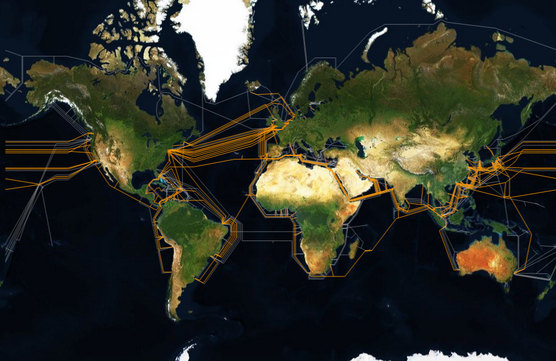
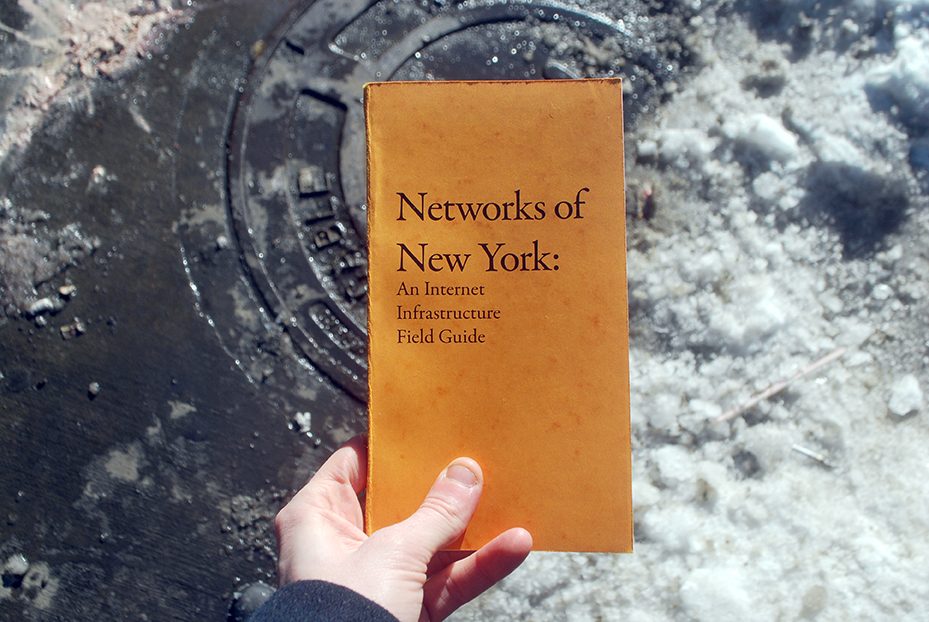
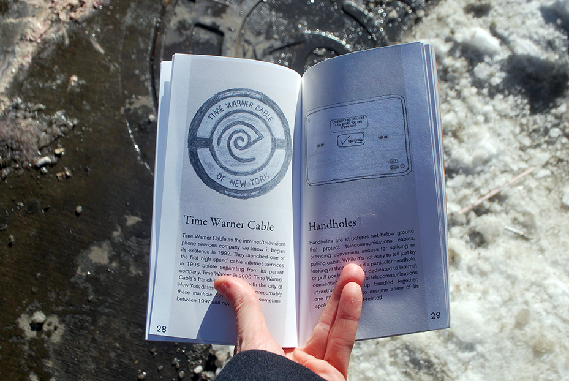
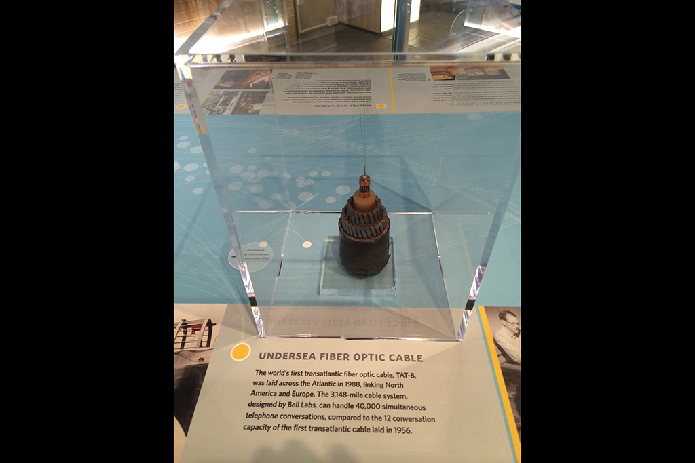
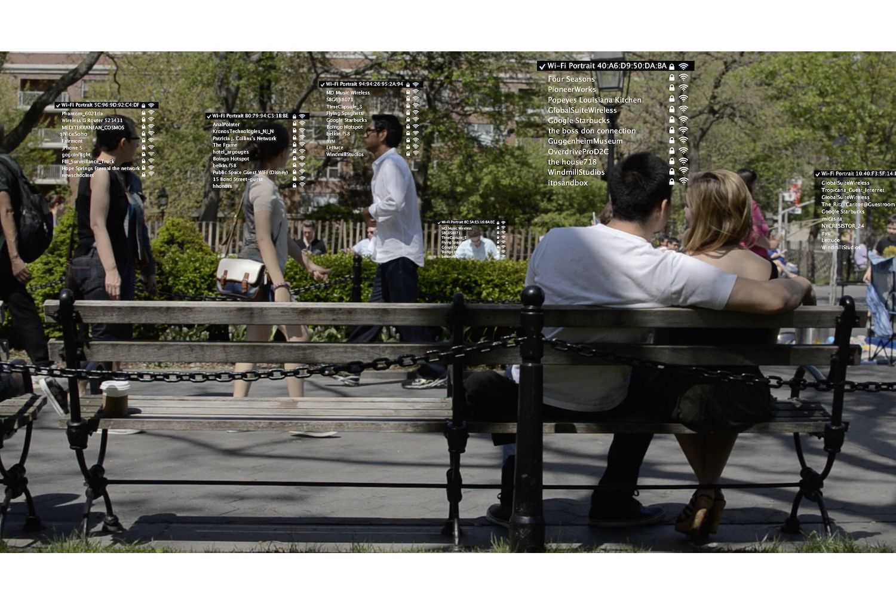
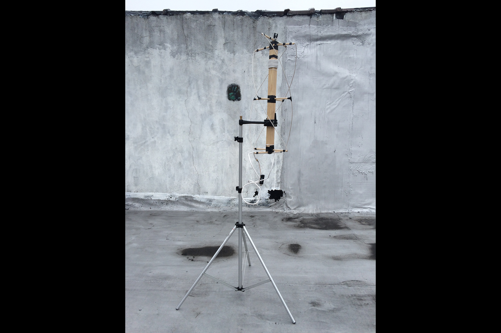
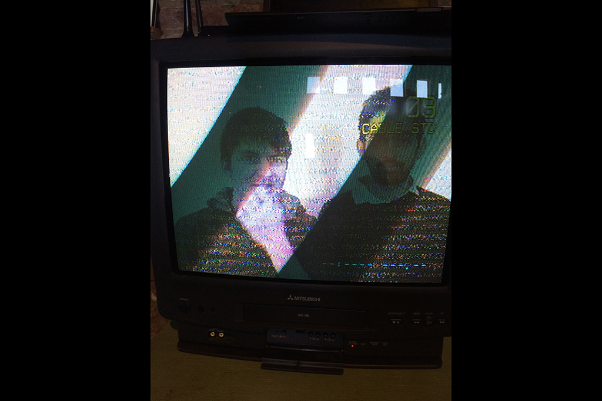

hello!
network geography
a class about all the real places that make up the internet
here are things

we live inside a giant computer
the inside of a giant computer just looks really boring and normal
if you want to see the internet
you can start by looking down






the syllabus
march 25
introductions, big-picture overviews
april 1
scavenger hunt
april 15
show and tell
april 25
¯\_(ツ)_/¯
let's take a break!